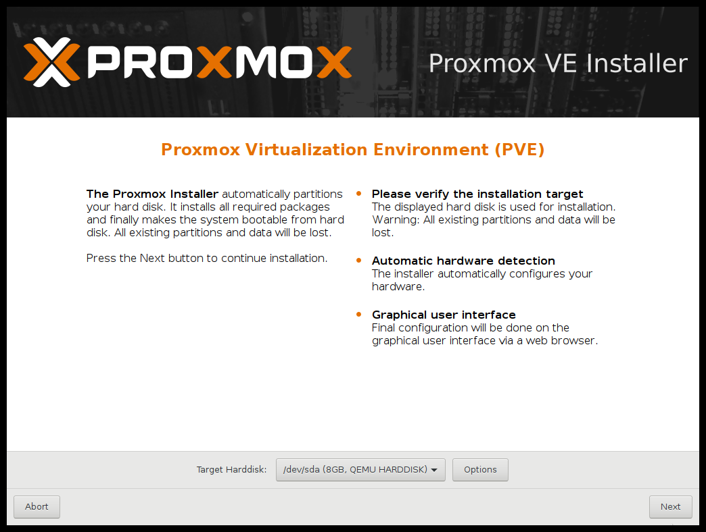
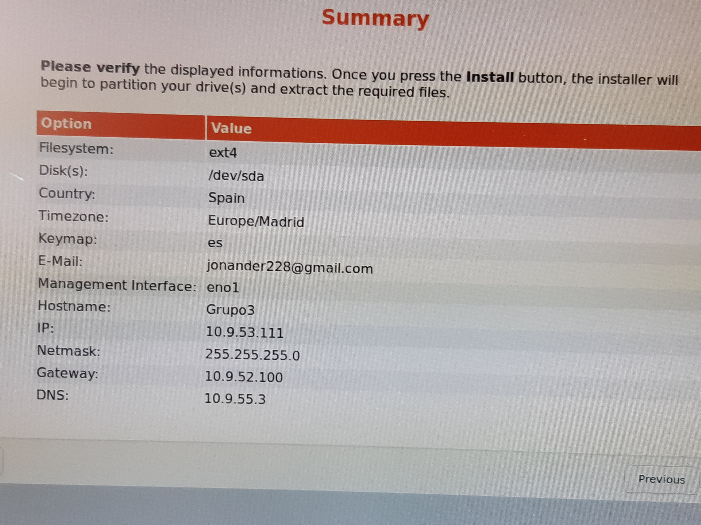

1.- Lo primero que neciesitaremos para poder crear nuestro servidor es instalar Proxmox
Para ello deberemos Descargar la iso de la sigiente pagina
PROXMOX
2.- Una vez tengamos la iso debemos crear un USB booteable para ello utilizaremos Etcher
3.- Para el sigueinte paso tendremos que insertar el usb booteable en la maquina en la que queremos instalar el proxmox y cambiar el orden de arranque
4.- El proximos pasos se basan en la configuracion del proxmox. En esta guia enseñaremos nuestra configuracion
6.- lo primero es decidir la particion donde queremos que se instale el proxmox

7.- Ahora toca decidir caracteristicas como la ip que queramos que tenga el servidor, la gateway, la contraseña que queremos que tenga y el puerto de acceso entre otras cosas

8.- una vez terminada la instalacion acabaremos en esta pantalla que nos dice que reiniciemos y entremos desde otra maquina antes de reiniciar
IMPORTANTE : aseguraros de hacer una foto a esta pantalla ya que es muy importante acordarnos de las configuraciones que hemos hecho
